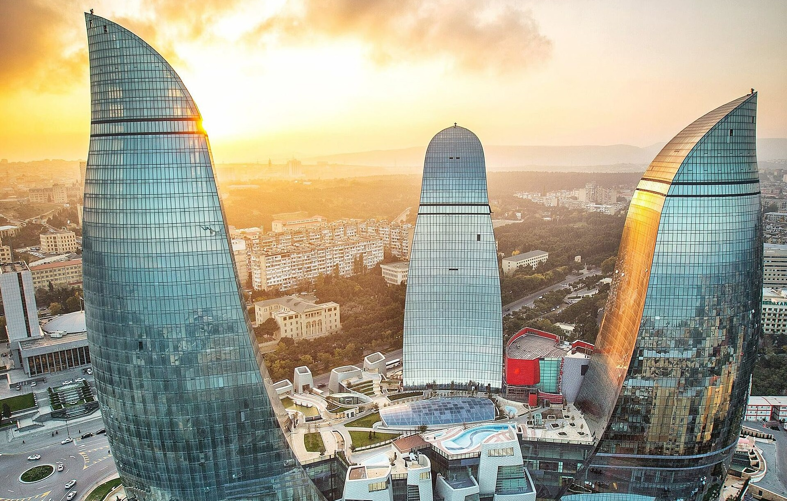
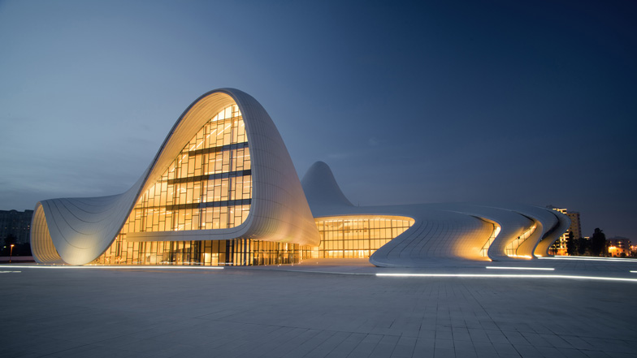
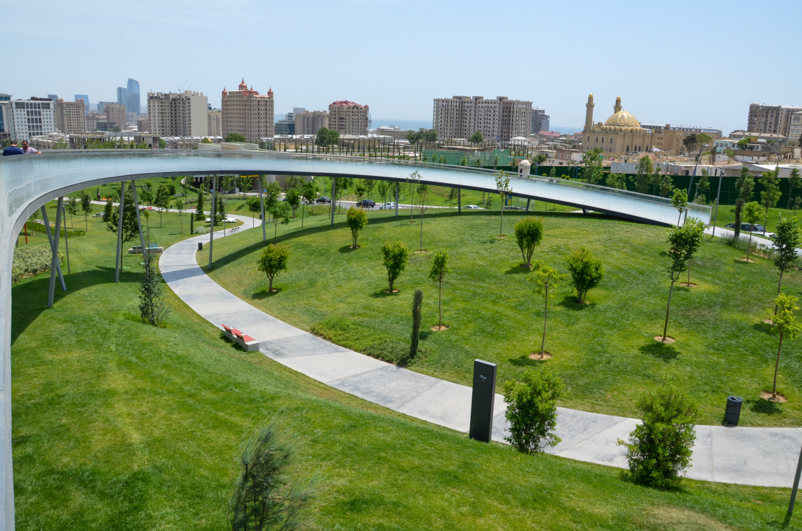
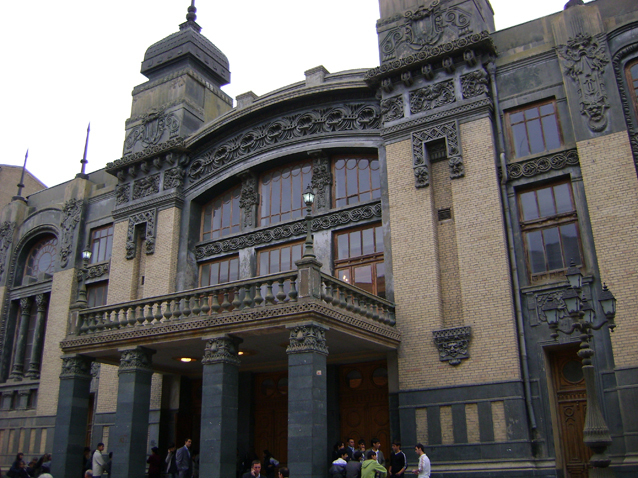

About Us
Planning to visit Baku? Discover what are the best attractions in the city, what you can do there, where you can hang out, where to eat and more, in the best guide to Baku, from Baku Guide.
On the fault line between East and West, Baku is unlike anywhere else on earth. Azerbaijan's capital offers a fascinating Soviet legacy, soaring towers that could have been transplanted from Shanghai, along with a beautiful ancient center. Contradictory it may be, but Baku is always a delight.
 Find a place
Find a place
Things To See In Baku

Top attractions

Top museums

Top parks

Top theatres